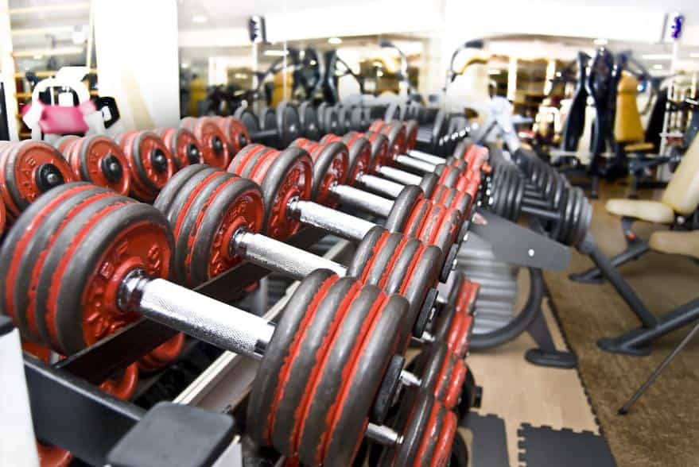
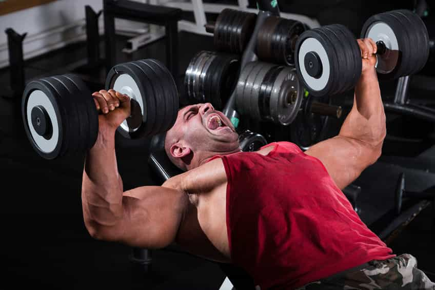
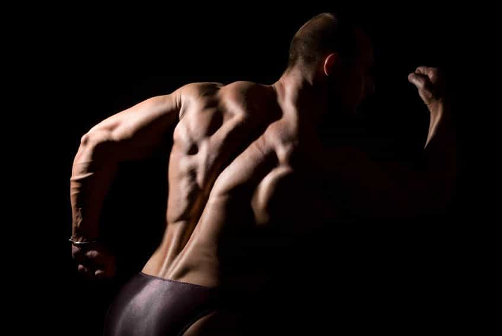

< < < Back
5 Things I Learned From Entering Bodybuilding Competitions – Return Of Kings
Recently, I had the opportunity to enter a bodybuilding competition. Bodybuilding has always been one of my main interests and passions, and I knew that this was the route I wanted to take. And although I wasn’t able to take home the blue ribbon (I’m a big guy, but you should have seen the competition), I have come away with some valuable tips. Check out these five important things I learned from my experience:
1. Hire A Coach With A Good Reputation

When I was preparing to enter the competition, I went through long months of training and dieting to get my body ready for the stage. Even at those times when I felt like I was physically ready to step out, I needed to know exactly how to present my physique so that I could flaunt my strengths and hide my weaknesses.
That’s why I found it crucial to have a great posing coach by my side. She was able to evaluate my physique, so that I soared in the competition. After all, a subtle move of my foot or twist of the torso creates lines to emphasize muscles, which can be all it takes to nab first place.
A good coach can help you with your nutrition as well. I personally have my favorite supplements, but many coaches will advise you of their favorite nutritional strategies and supplementation to use right before a competition. I have done competitions with and without a coach and I can tell you that they will give a huge competitive advantage.
2. Videotape Your Sessions

While I definitely learned a great deal about posing from looking at myself in mirrors, nothing compared to capturing it on video. By looking at myself in videos, I was able to see how I smiled and moved throughout my poses. The last thing I wanted was to look like a deer caught in headlights.
Developing stage presence is as much about being graceful as it is having confidence. Yes, in order to be a bodybuilding competitor you must have an incredible physique, but to place in the top positions, you really need the complete package. Taping myself practicing my routines really made a difference in my overall performance.
3. Pay Attention To Breathing And Timing

The more I practiced my routine, the more I found myself able to perform it on stage without any hesitations. I found that when I efficiently transitioned between all of the poses that were mandatory of me, I created a more polished presentation. I was also able to hold each mandatory pose for longer.
A lot of bodybuilders don’t realize how important this is, as you only have a little bit of time to present all the training you’ve been working so hard on. This is why it was vital for me to time my routine. Most of the competitions I entered only gave me 10 seconds total to complete my presentation, which came out to about two seconds per pose, and the last thing that any bodybuilder wants to do is fall short on time.
4. Do A Trial Run

Knowledge really is power, especially on competition day. This is why I went into my bodybuilding competitions learning as much as possible about the venue where the competition was being held.
I also attended a couple of competitions at the venue beforehand, so that I could see exactly how big the stage and audience were. To me, it was important to know what to expect when I first walked out, because I didn’t want to feel intimidated at all.
5. Know The Judges
Lastly, I learned how crucial it is to know who will be judging a bodybuilding competition, and who exactly the head judge will be. This is an invaluable tool, as judging is often subjective.
One judge may be going for a softer, more feminine appearance, while another judge might prefer harder physique with more visible muscles. It was very beneficial to me to know who my judges were and what they preferred. I was able to get more insight by asking around, viewing galleries, and looking at videos of past competition winners.
Read More: 11 Things I Learned In 2014


{kind=link}
{kind=link}
{kind=link}